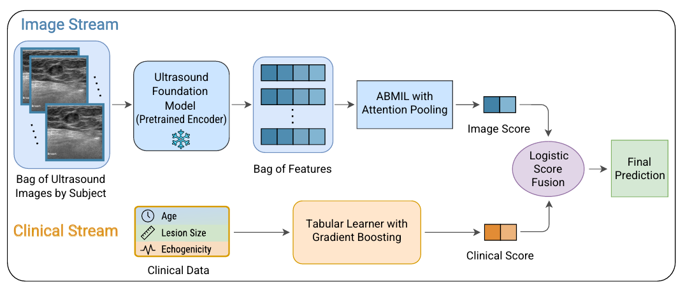
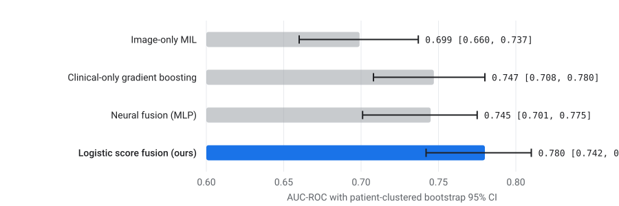
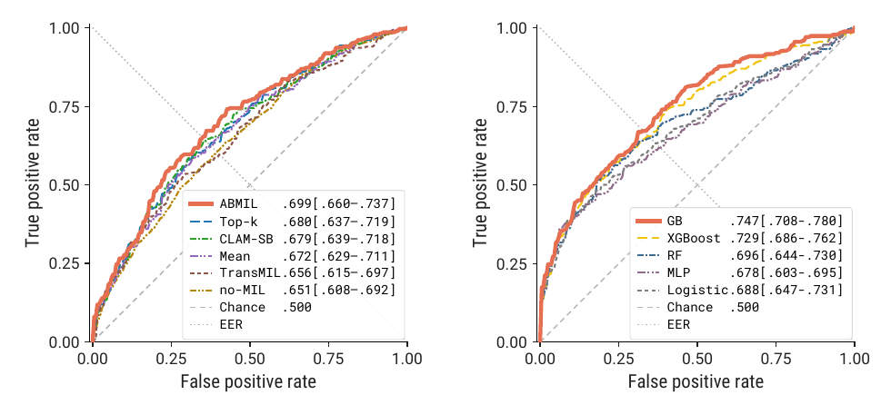
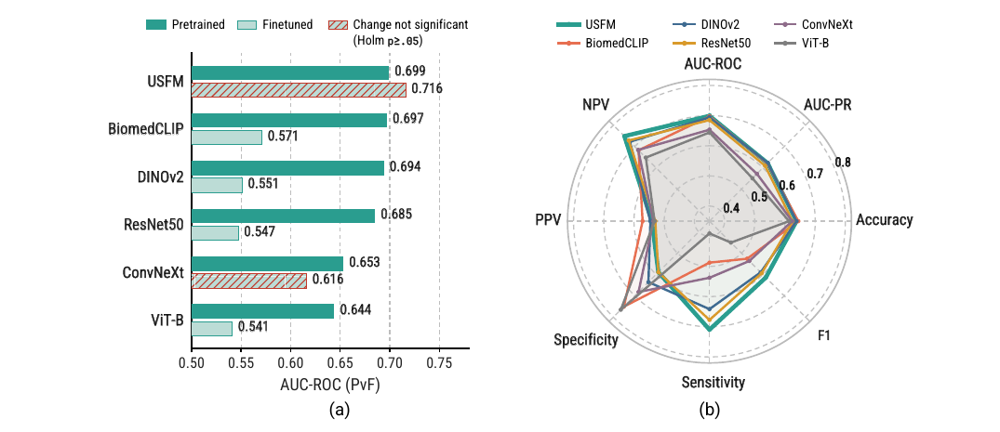

Home›Publications›Blog
Diagnosing fibroepithelial breast tumors at the patient level with multimodal multiple instance learning
Fibroadenomas and phyllodes tumors are two kinds of fibroepithelial breast lesions that look remarkably alike, both in the clinic and on an ultrasound screen. The distinction matters a great deal. A fibroadenoma is benign and is usually just observed. A phyllodes tumor needs complete surgical excision with negative margins, because borderline and malignant cases can recur locally and progress.
Core needle biopsy, the standard way to settle the question before surgery, is inconclusive in about 15% of patients. When a fibroadenoma cannot be confidently distinguished from a phyllodes tumor, surgeons often excise the lesion to obtain a definitive diagnosis. That means unnecessary surgery for many patients whose lesions were fibroadenomas all along, with poorer cosmetic outcomes, higher healthcare costs and higher morbidity. Ultrasound is noninvasive and widely available, and features such as lesion size and echogenicity have been linked to phyllodes tumors, but the two lesion types overlap so much that visual interpretation alone has limited accuracy.
In “Multimodal Multiple Instance Learning for Fibroepithelial Tumor Diagnosis in Breast Ultrasound”, presented at the Deep-Breath Workshop at MICCAI 2026, we describe a framework that makes this diagnosis the way a clinician does: at the level of the patient, reading all of their ultrasound images together with a few routine clinical variables. On a cohort of 688 patients from 14 sites, a simple combination of an ultrasound score and a clinical score reached 0.780 AUC-ROC, improving on either source alone and on a heavier end-to-end neural fusion. To the best of our knowledge, this is the first patient-level multiple instance learning framework for fibroepithelial tumor evaluation in breast ultrasound.
Reading the way clinicians read
Most deep learning work on this problem classifies one ultrasound image at a time. That is not how a radiologist works. In practice, all the views of a lesion are interpreted together, alongside the patient’s context: their age, the lesion’s size, and other descriptors in the imaging report.
Multiple instance learning (MIL) matches that habit. Each patient becomes a “bag” of ultrasound images with a single diagnostic label attached to the whole bag rather than to each image. The model learns which images in the bag to lean on and produces one score per patient. In our data, a patient’s bag holds a median of 4 images, ranging from a single view up to 56, spanning different acquisition planes and repeated captures of the same lesion.

How the model works
The framework has two streams and one small combiner.
- Image stream. Every ultrasound image is passed through a frozen ultrasound foundation model (USFM), which turns it into a fixed 768-number description. Nothing inside the encoder is trained on our cohort, which keeps the number of learned parameters small. A gated attention network then assigns each image a weight, sums the weighted descriptions into one patient representation, and turns it into an image score.
- Clinical stream. Three variables that are routinely available before surgery, age, lesion size measured on ultrasound, and echogenicity, go into a gradient boosting learner that produces a clinical score. We use a tree model rather than a neural network here because tree ensembles tend to do well on small tables with a handful of variables.
- Fusion. A logistic model with two inputs weighs the image score against the clinical score to give the final probability. This late fusion keeps the model low-capacity and interpretable: one can read off how much each stream is trusted.
One caveat worth stating plainly: the attention weights tell you which views contributed most to a patient’s prediction. They are not a lesion localization map and should not be read as pointing at pixels.
Evaluating without leaking
The study is retrospective. We queried the surgical pathology records of 14 hospitals and clinical sites within a single integrated health network, accrued between 2003 and 2024, under an approved IRB protocol with consent waived. Of 700 curated, pathology-confirmed cases, 12 lacked paired ultrasound and clinical data, leaving 688 patients: 409 fibroadenomas and 279 phyllodes tumors (198 benign, 81 borderline or malignant), with 4,063 ultrasound images in total.
We used stratified, patient-grouped 5-fold cross-validation, so all images from a patient stay in the same fold. Within each fold the cohort is split into inner-training (64%), inner-validation (16%) and outer-test (20%) sets. Every choice that involves selection, early stopping, clinical hyperparameters, fitting the fusion, and picking the operating threshold, is made on inner-validation only. The resulting model is applied to the outer-test patients exactly once. All metrics carry patient-clustered bootstrap 95% confidence intervals, and paired comparisons use a fold-aware bootstrap with Holm correction, with DeLong and clustered McNemar tests as sensitivity checks.
Key results
Clinical variables alone turned out to be a strong baseline: gradient boosting on age, lesion size and echogenicity reached 0.747 AUC-ROC, above image-only MIL at 0.699. Fusing the two streams inside a neural network (an MLP) did not improve on clinical evidence alone. The proposed logistic score fusion reached 0.780 AUC-ROC and 0.725 AUC-PR, and its advantage held against every other configuration after correction for multiple comparisons.

Because fibroadenomas and phyllodes tumors overlap in both clinical profile and sonographic appearance, the practical value of the image stream is in re-ranking borderline cases that sit near the decision threshold. The model is best viewed as a clinical prior combined with complementary ultrasound evidence, rather than as a replacement for clinical context.
Simpler was better
We also asked, at each branch of the design, whether a more elaborate choice would have helped. On a cohort of a few hundred patients, the answer was consistently no.
- Patient-level aggregation, not a particular pooler. Moving from image-level prediction to attention-based MIL raised AUC-ROC from 0.651 to 0.699 (p = 0.030). But every MIL pooling operator we tried, from simple mean pooling to TransMIL and CLAM, landed in a narrow band between 0.656 and 0.699. The gain comes from formulating the problem at the patient level, not from the specific aggregator.
- Tree models for the clinical table. Gradient boosting (0.747), XGBoost (0.729) and random forest (0.696) all outperformed logistic regression (0.688) and an MLP (0.678) on the three clinical variables. Differences among the boosting methods were small, so we do not claim gradient boosting is significantly better than the other boosters.
- Frozen encoders, not fine-tuned ones. Fine-tuning significantly degraded four of six image encoders (BiomedCLIP, DINOv2, ResNet50 and ViT-B). For USFM it gave a nominal rise from 0.699 to 0.716 that was not statistically significant (p = 0.35). On a cohort this size, fine-tuning a large encoder mostly buys overfitting.


One more check mattered to us. Fibroadenoma patients tend to have slightly more images than phyllodes patients, so could the model simply be counting? A classifier that sees only the number of images per patient reaches just 0.577 AUC-ROC (95% CI [0.535, 0.619]), well below the image stream’s 0.699. And because the attention weights sum to one, the pooled representation is a weighted average that does not grow with the bag.
Limitations and what’s next
This is a retrospective study from one health system in one region, so the variation in operators and scanners is confined to that system, and the two-decade accrual window spans several generations of ultrasound equipment. External validation on an independent cohort is still needed before any claim about clinical use. The clinical variables are limited to three; information such as core needle biopsy pathology, which clinicians do have in hand, was not used. And USFM was the only ultrasound-specific foundation model we tested.
Next, we plan to expand the framework to larger datasets, add uncertainty estimation so the model can say when it is unsure, and bring in additional modalities such as mammography and histopathology.
Acknowledgements
This work was done with Mahad Ali, M Shifat Hossain, Logan R Holt, Victoria Chamberlain, Tyler Shern, Tolga Ozmen and Laura J Brattain, across the Department of Electrical and Computer Engineering and the Department of Medicine at the University of Central Florida and the Breast Section, Division of Breast Surgery at Mass General Brigham. The study was approved by the Mass General Brigham Institutional Review Board.